100%
คลิกพื้นหลังหรือกด Esc เพื่อปิด · ใช้ + / − เพื่อซูม
ระบบ VMS รองรับหลายช่องทาง และแบ่งสิทธิ์ตามหน้าที่ (least privilege) — ให้สิทธิ์เท่าที่จำเป็น
จองนัด · ดู QR · ติดตามสถานะของตนเอง
สร้างนัด · อนุมัติ · ดูแลผู้มาเยือนของแผนก
งานของ staff + จัดการ blocklist + รายงานรวม
check-in/out · พิมพ์บัตร · รับ walk-in ที่จุดบริการ
ตั้งค่าและจัดการระบบทั้งหมด (เมนู "ตั้งค่า")
ผู้มาเยือนจองผ่านมือถือ
เจ้าหน้าที่ / IT
บริการตนเอง
มี รปภ. ช่วย
ผ่าน LINE หรือเว็บ ระบุวัตถุประสงค์และผู้พบ
กลุ่มผู้อนุมัติที่ผูกกับวัตถุประสงค์
ระบบส่ง QR ให้ผู้มาเยือนทาง LINE/อีเมล
สแกน QR ที่ Kiosk/Counter รับบัตร
รับ WiFi · จัดการผู้ติดตาม · ติดตามเวลา
ออกจากอาคาร ระบบบันทึกเวลาออก
เมนู "ตั้งค่า" (Settings) เข้าถึงได้เฉพาะสิทธิ์ admin — ตั้งค่าให้ครบตามลำดับก่อนเปิดใช้งานจริง
สร้าง/แก้ไข/ระงับบัญชี · กำหนด role · reset รหัสผ่าน · ผูกบัญชี LINE
เมนู: ตั้งค่า → จัดการผู้ใช้งาน ·settings/users
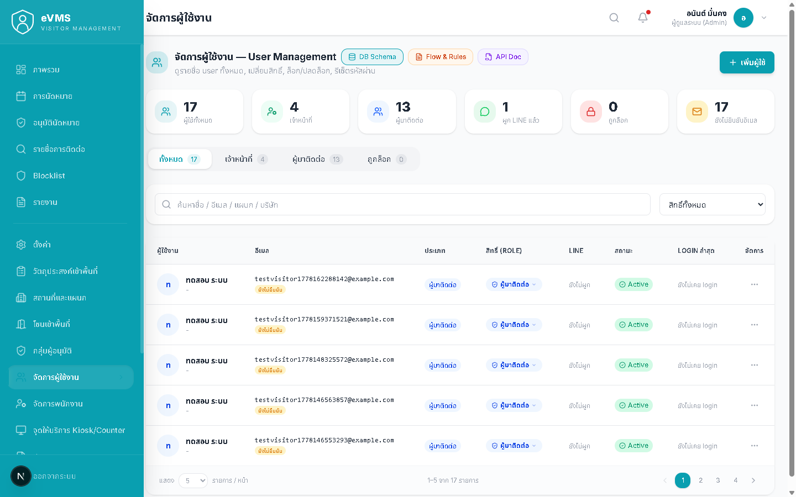
1 2 3 4 คลิกเพื่อขยายกดปุ่ม + เพิ่มผู้ใช้ กรอก username/email เลือก role และผูกกับพนักงานในทำเนียบ
ใช้แท็บ ทั้งหมด / เจ้าหน้าที่ / ผู้มาติดต่อ / ถูกล็อก เพื่อดูบัญชีแต่ละกลุ่ม
ค้นด้วยชื่อ/อีเมล/แผนก และเลือกกรองเฉพาะ role ที่ต้องการ
เปลี่ยน ROLE, ล็อก/ปลดล็อก, reset รหัสผ่าน ได้ที่คอลัมน์จัดการ (ปุ่ม …)
ให้สิทธิ์เท่าที่จำเป็น และจำกัดจำนวนบัญชี admin — ทบทวนสิทธิ์เป็นระยะ
รากฐานของทั้งระบบ ตั้งก่อนเป็นอันดับแรก — ใช้อ้างอิงในนัดหมาย การกำหนดเจ้าหน้าที่ และรายงาน
เมนู: ตั้งค่า → สถานที่และแผนก ·settings/locations
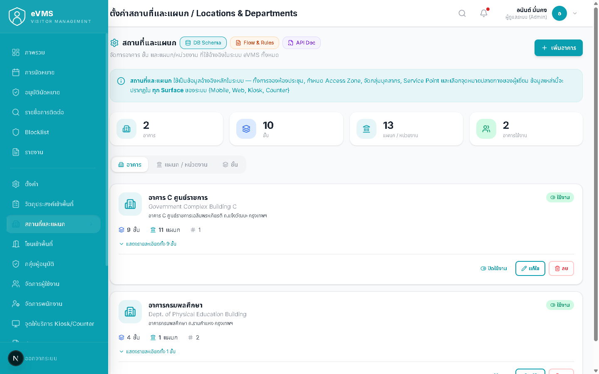
1 2 3 4 คลิกเพื่อขยายกด + เพิ่มอาคาร เพื่อสร้างโครงสร้างลำดับชั้น อาคาร → ชั้น → แผนก
ใช้แท็บ อาคาร / แผนก–หน่วยงาน / ชั้น เพื่อจัดการแต่ละระดับ
แต่ละอาคารแสดงจำนวนชั้นและแผนก กดขยายเพื่อดูรายชั้น
ปรับข้อมูลหรือปิดการใช้งานอาคารที่ไม่ใช้แล้วได้จากปุ่มในการ์ด
ตั้งชื่อให้เป็นรูปแบบเดียวกันทั้งกรม เพื่อให้รายงานแยกแผนกอ่านง่าย
กำหนดประเภทการเข้าพบ ช่องทางที่แสดง โหมดการลงทะเบียน และแผนกที่รับผิดชอบ
เมนู: ตั้งค่า → วัตถุประสงค์เข้าพื้นที่ ·settings/visit-purposes
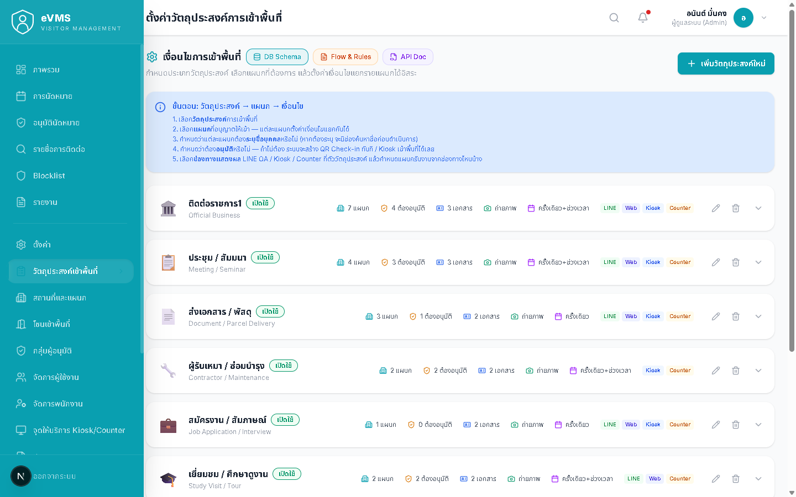
1 2 3 4 คลิกเพื่อขยายกด + เพิ่มวัตถุประสงค์ใหม่ เช่น ติดต่อราชการ ประชุม ส่งของ ผู้รับเหมา
เลือกแผนกที่รับผิดชอบ และสลับสถานะ เปิดใช้/ปิดใช้ ของแต่ละรายการ
กำหนดต้องอนุมัติกี่ขั้น เอกสารที่ต้องใช้ และบังคับถ่ายรูปหรือไม่
เลือก LINE / Web / Kiosk / Counter ควบคุมว่าวัตถุประสงค์นี้จองผ่านช่องทางใดได้
การตั้งช่องทางที่นี่ กำหนดสิ่งที่ผู้มาเยือนเห็นบน LINE/Kiosk โดยตรง
กำหนดว่าผู้เยี่ยมต้องแสดงเอกสารอะไรบ้าง ตามประเภทการเข้าพื้นที่
เมนู: ตั้งค่า → ประเภทเอกสาร ·settings/document-types
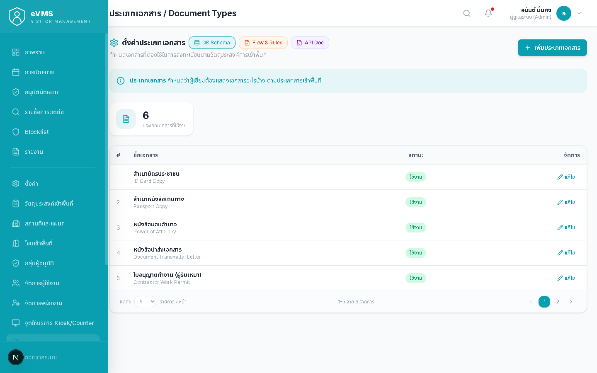
1 2 3 4 คลิกเพื่อขยายกด + เพิ่มประเภทเอกสาร เช่น บัตรประชาชน Passport Visa Work Permit
ตารางแสดงเอกสารพร้อมลำดับการแสดง (จัดเรียงได้)
สลับสถานะ ใช้งาน ของเอกสารแต่ละประเภท
ตั้งบังคับ/ไม่บังคับต่อวัตถุประสงค์ และกำหนดให้ต้องถ่ายรูปเอกสารหรือไม่
เจ้าหน้าที่ในทำเนียบคือ "ผู้ถูกนัดพบ (host)" ที่ผู้มาเยือนเลือกตอนจอง
เมนู: ตั้งค่า → จัดการพนักงาน ·settings/staff
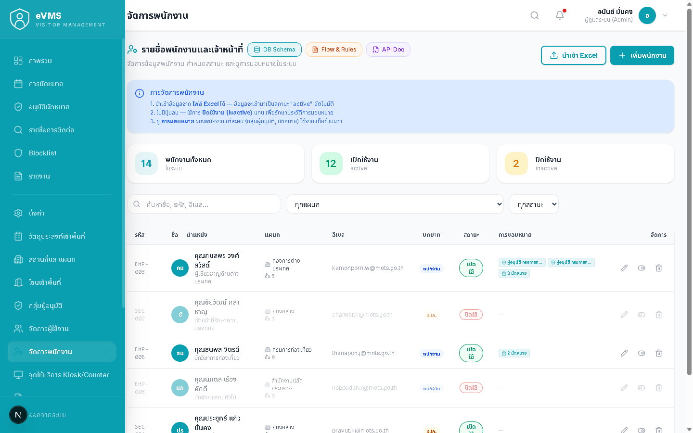
1 2 3 4 คลิกเพื่อขยายกด นำเข้า Excel เพิ่มพนักงานทีละหลายคน (สถานะ active อัตโนมัติ)
กด + เพิ่มพนักงาน กรอกชื่อ แผนก ตำแหน่ง และผูกบัญชี LINE
กรองตามแผนกและสถานะ เพื่อหาพนักงานได้เร็ว
คอลัมน์การมอบหมายแสดงว่าอยู่กลุ่มผู้อนุมัติ/มีนัดหมายกี่รายการ
ใช้ ปิดใช้งาน (inactive) แทนการลบ เพื่อรักษาประวัติการมอบหมาย
กำหนดพื้นที่เข้าถึงทางกายภาพ และเชื่อมต่อระบบประตู Hikvision (access control)
เมนู: ตั้งค่า → โซนเข้าพื้นที่ ·settings/access-zones
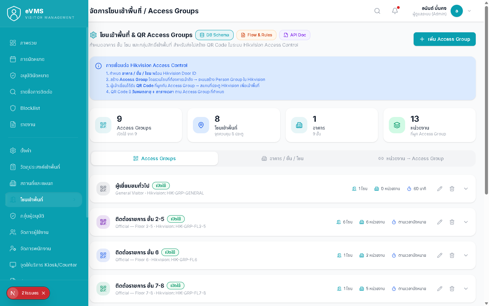
1 2 3 4 คลิกเพื่อขยายกด + เพิ่ม Access Group รวมโซนที่ต้องการเข้าถึงเป็นกลุ่มเดียว
ใช้แท็บเพื่อกำหนดโซนเข้ากับอาคาร-ชั้น และผูกหน่วยงานเข้ากับ Access Group
ระบุ Hikvision Door ID เพื่อให้ระบบสร้าง Person Group ควบคุมประตูจริง
กำหนดจำนวนโซน หน่วยงาน และตารางเวลา/วันหมดอายุของ QR ตาม Access Group
คำขอวิ่งไปหาผู้รับผิดชอบที่ถูกต้อง — สร้างกลุ่ม เพิ่มสมาชิก และผูกกับวัตถุประสงค์
เมนู: ตั้งค่า → กลุ่มผู้อนุมัติ ·settings/approver-groups
เส้นทางคำขอ: ผู้มาเยือนจอง → ระบบส่งให้กลุ่มผู้อนุมัติที่ผูกกับวัตถุประสงค์ → อนุมัติ/ปฏิเสธ → แจ้งผู้มาเยือน
settings/approver-groupsตั้งชื่อกลุ่มตามสายงาน/แผนกที่รับผิดชอบ
เลือกสมาชิกจากทำเนียบเจ้าหน้าที่ และกำหนดสิทธิ์การอนุมัติของแต่ละคน
จุดสำคัญที่สุด — ผูกกลุ่มเข้ากับวัตถุประสงค์ เพื่อให้คำขอวิ่งไปถูกคน
เลือกแจ้งผู้อนุมัติทาง Email / LINE / SMS
ใช้ LINE สำหรับการตอบสนองเร็ว และ Email สำหรับเก็บหลักฐาน
Kiosk = บริการตนเอง · Counter = มีเจ้าหน้าที่ รปภ. ช่วยดำเนินการ
เมนู: ตั้งค่า → จุดให้บริการ Kiosk/Counter ·settings/service-points
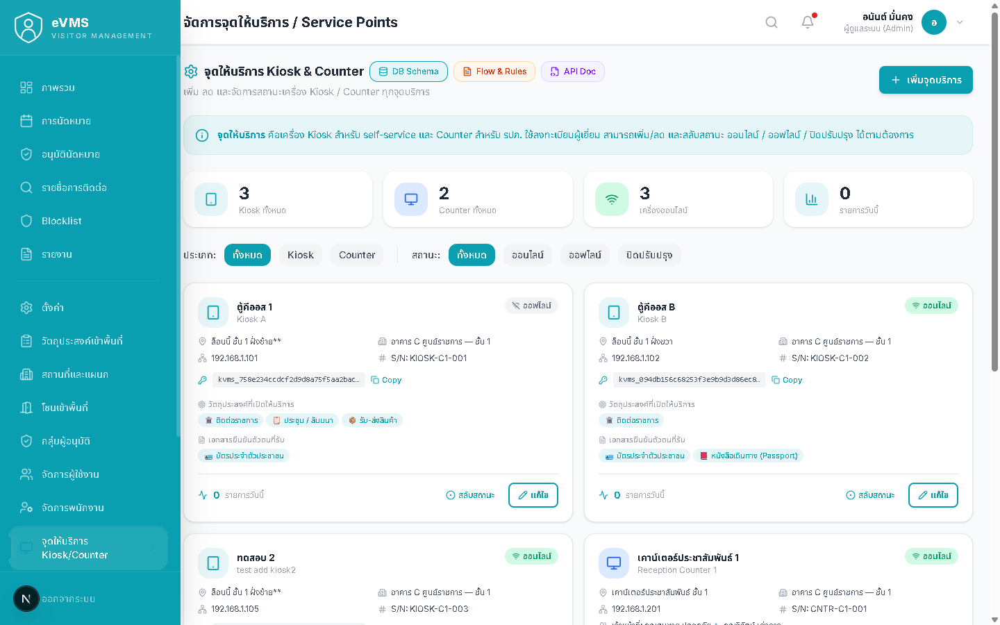
1 2 3 4 คลิกเพื่อขยายกด + เพิ่มจุดบริการ ระบุ IP, MAC, Serial number ของเครื่อง
เลือก Kiosk / Counter และดูออนไลน์ / ออฟไลน์ / ปิดปรับปรุง
กำหนด WiFi credentials, PIN สำหรับ admin, และวัตถุประสงค์/เอกสารที่เปิดบริการ
เปิด-ปิดเครื่องชั่วคราว หรือแก้ไขค่าคอนฟิกได้จากการ์ดแต่ละเครื่อง
ควบคุมว่าระบบจะอนุญาต Walk-in และ Kiosk ในช่วงเวลาใด — กฎ "วันหยุด" จะ override "ปกติ"
เมนู: ตั้งค่า → เวลาทำการ ·settings/business-hours
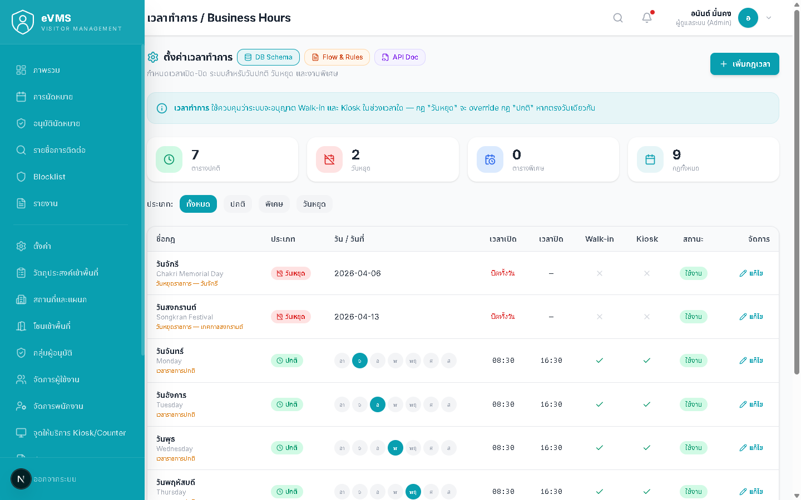
1 2 3 4 คลิกเพื่อขยายกด + เพิ่มกฎเวลา ตั้งเวลาเปิด-ปิด หรือกำหนดวันหยุด/วันหยุดนักขัตฤกษ์
ดูแยก ปกติ / พิเศษ / วันหยุด ได้จากตัวกรองด้านบน
เช่น วันจักรี/สงกรานต์ ตั้งเป็นปิดทั้งวัน ระบบไม่รับ walk-in/Kiosk
เปิด/ปิดการอนุญาต Walk-in และ Kiosk แยกรายวันได้
ตั้งค่าเซิร์ฟเวอร์ส่งอีเมลสำหรับการแจ้งเตือนอัตโนมัติ แล้วทดสอบส่งจริง
เมนู: ตั้งค่า → อีเมลระบบ ·settings/email-system
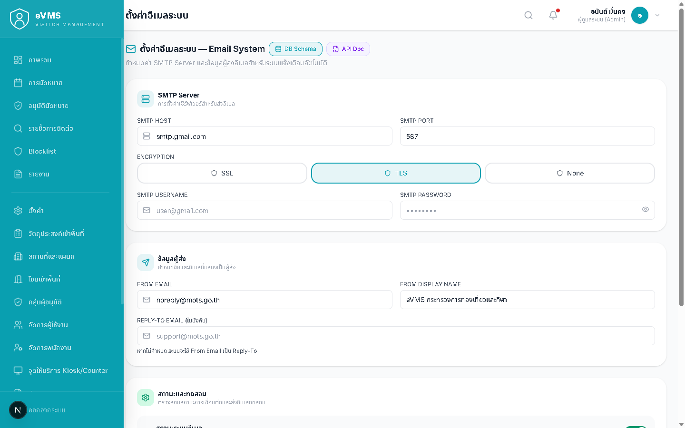
1 2 3 คลิกเพื่อขยายกรอก SMTP Host และ Port (เช่น 587) ตามค่าจากผู้ให้บริการอีเมล
เลือกการเข้ารหัส TLS / SSL / None ให้ตรงกับเซิร์ฟเวอร์
กำหนด From Email, ชื่อผู้ส่ง และ Reply-To (ถ้ามี)
เลื่อนลงส่วน "สถานะและทดสอบ" เพื่อยืนยันการตั้งค่า — ระวัง port/firewall และ app password
เชื่อมต่อ LINE Messaging API, LIFF, Webhook และ Rich Menu สำหรับผู้มาเยือนบนมือถือ
เมนู: ตั้งค่า → LINE OA ·settings/line-oa-config
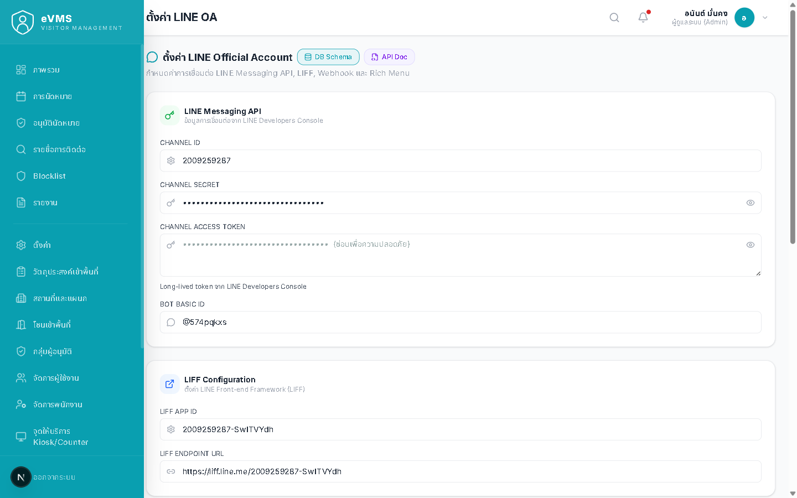
1 2 3 คลิกเพื่อขยายกรอก Channel ID / Channel Secret / Access Token จาก LINE Developers Console
ตั้งค่า LIFF endpoint (หน้าจองบนมือถือ) และจัดการ rich menu
ยืนยันบัญชี OA และ endpoint ให้ตรงก่อนเปิดใช้จริง
ยืนยันการเชื่อมต่อ webhook เพื่อให้ระบบรับข้อความจาก LINE ได้ครบ
กำหนดข้อความตาม event: สร้างนัด / อนุมัติ / ปฏิเสธ / check-in — รองรับ LINE, Email, SMS
เมนู: ตั้งค่า → เทมเพลตแจ้งเตือน ·settings/notification-templates
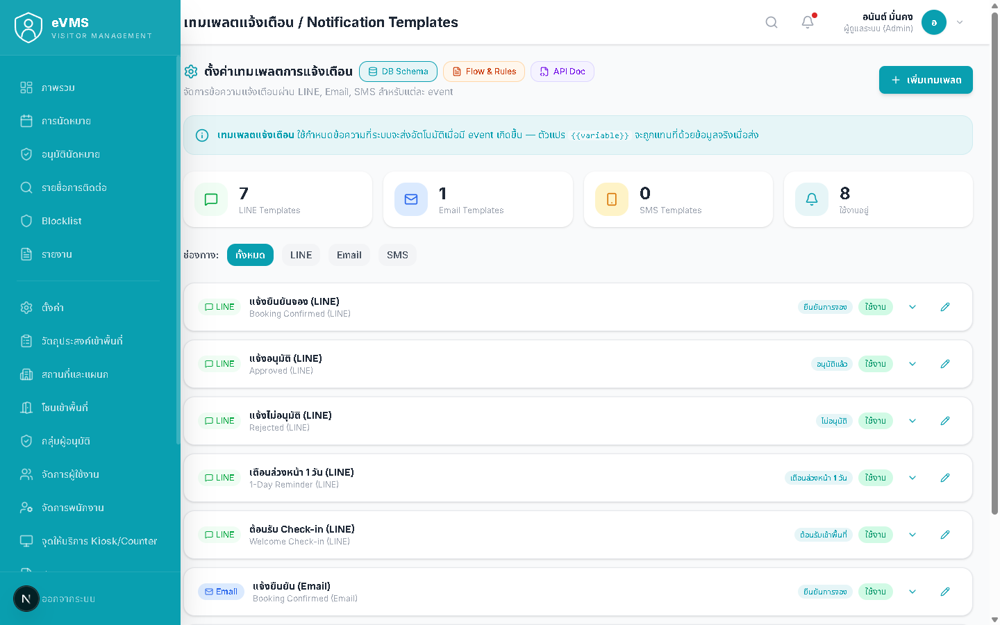
1 2 3 4 คลิกเพื่อขยายกด + เพิ่มเทมเพลต สร้างข้อความสำหรับแต่ละ event
ดูแยก LINE / Email / SMS จากตัวกรองด้านบน
กดดินสอเพื่อแก้เนื้อหา รองรับ TH/EN และเปิด/ปิดการใช้งาน
ใส่ {{variable}} เช่น ชื่อผู้มาเยือน วันเวลานัด ระบบแทนค่าจริงเมื่อส่ง
หน้ารวมตั้งค่า LINE OA, LINE Flex Message และอีเมล — จัดการ webhook และ rich menu ในที่เดียว
เมนู: ตั้งค่า → LINE OA & แจ้งเตือน ·settings/line-message-templates
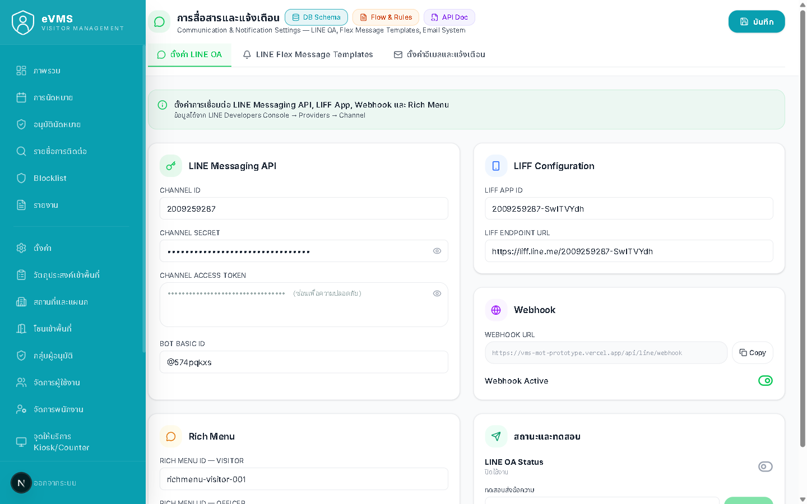
1 2 3 4 คลิกเพื่อขยายเลือก ตั้งค่า LINE OA / LINE Flex Message Templates / อีเมลและแจ้งเตือน
ตรวจ Channel/Token, LIFF และออกแบบ Flex message (หัวข้อ ปุ่ม ค่าตัวอย่าง)
เปิดสวิตช์ Webhook และคัดลอก Webhook URL ไปตั้งใน LINE Developers
กด บันทึก มุมขวาบนทุกครั้งหลังแก้ไขค่า
กำหนดข้อความนโยบายความเป็นส่วนตัว ระยะเก็บข้อมูล และตรวจสอบ log การให้ความยินยอม
เมนู: ตั้งค่า → PDPA / ข้อมูลส่วนบุคคล ·settings/pdpa-consent
กำหนดนโยบาย (TH/EN), บังคับเลื่อนอ่านจนจบก่อนยินยอม, จัดการเวอร์ชัน และตรวจ consent log ย้อนหลัง
settings/pdpa-consentกำหนดข้อความความเป็นส่วนตัว รองรับสองภาษา (TH/EN)
ตั้ง data retention ตามนโยบายหน่วยงาน
บังคับให้เลื่อนอ่านจนจบก่อนกดยินยอม และจัดการเวอร์ชันของ consent
ดูบันทึกการให้ความยินยอม — สำคัญต่อการตรวจสอบย้อนหลัง
ออกแบบบัตรผู้มาเยือนที่พิมพ์จาก Kiosk — เลือกส่วนที่แสดง และดู Live Preview ก่อนพิมพ์
เมนู: ตั้งค่า → แบบฟอร์ม Visit Slip ·settings/visit-slips
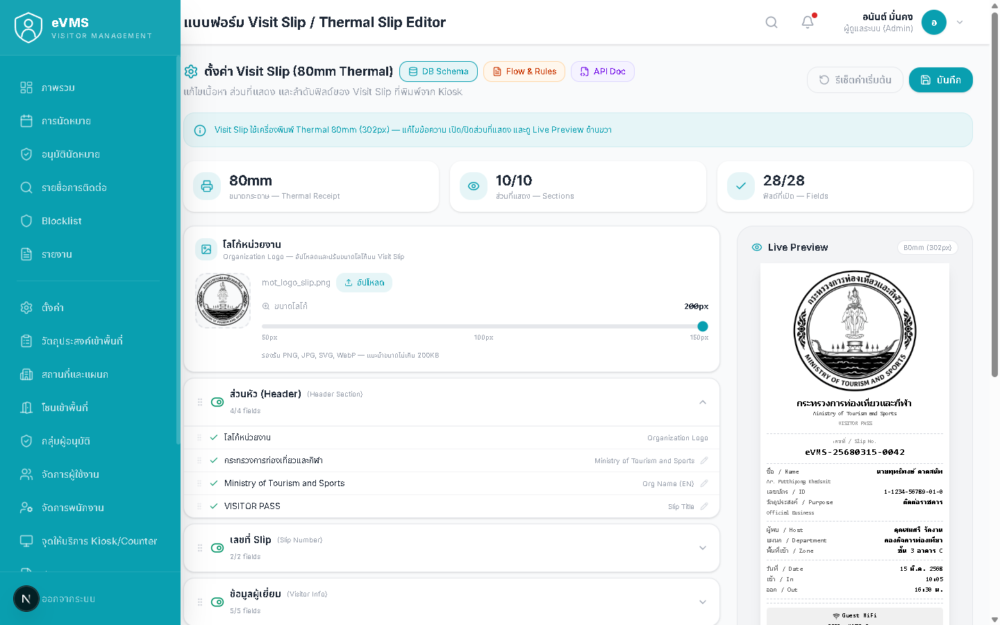
1 2 3 4 คลิกเพื่อขยายเลือกขนาดกระดาษ (thermal 80mm / A4) และกด บันทึก เมื่อแก้ไขเสร็จ
อัปโหลดและปรับขนาดโลโก้ที่แสดงบนบัตร
เลือกแสดง ข้อมูลผู้มาเยือน, QR code, ชื่อ host เป็นราย section/field
ดูตัวอย่างบัตรจริงด้านขวาก่อนพิมพ์ใช้งาน
ใช้งานผ่านเว็บและแอปมือถือ (officer) — สร้างนัด อนุมัติ ดูแลผู้มาเยือน และดูรายงาน
อ่านค่าสรุปประจำวัน: ผู้มาเยือน · อยู่ในอาคาร · check-in/out · การแจ้งเตือนเกินเวลา (overstay)
เมนู: ภาพรวม ·dashboard
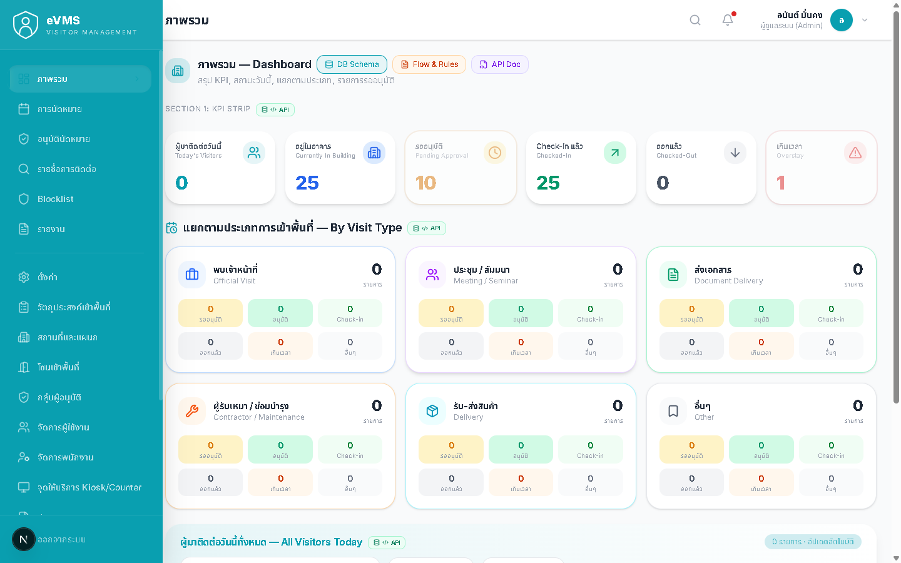
1 2 3 4 คลิกเพื่อขยายผู้ติดต่อวันนี้ · รออนุมัติ · check-in แล้ว — ตัวเลขสรุปแถวบน
จำนวนผู้มาเยือนที่กำลังอยู่ในอาคารขณะนี้
เฝ้าดูการ์ด "เกินเวลา" เพื่อติดตามผู้ที่อยู่นานเกินกำหนด
ดูสัดส่วนพบเจ้าหน้าที่ / ประชุม / ส่งเอกสาร / ผู้รับเหมา ฯลฯ
ที่มุมขวาบน → โปรไฟล์ เพื่อเปลี่ยนรหัสผ่านและผูกบัญชี LINE รับแจ้งเตือน
ผูก LINE เพื่อรับแจ้งเตือนนัดหมาย/อนุมัติ และรับ Visit Slip ผ่าน LINE โดยไม่ต้องพิมพ์กระดาษ
เมนู: โปรไฟล์ของฉัน ·profile
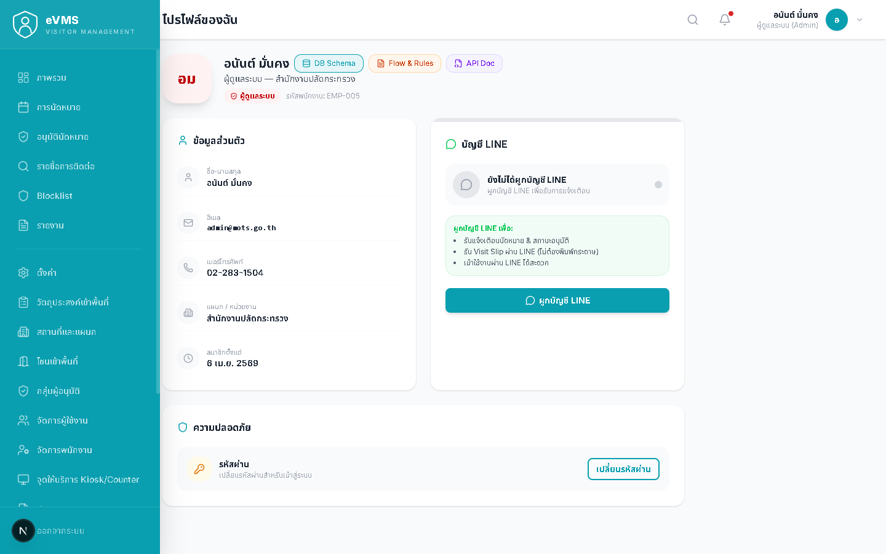
1 2 3 คลิกเพื่อขยายตรวจสอบชื่อ อีเมล เบอร์โทร และแผนก/หน่วยงานของตนเอง
กด ผูกบัญชี LINE เพื่อรับแจ้งเตือนและ Visit Slip ทาง LINE
ที่ส่วน "ความปลอดภัย" กด เปลี่ยนรหัสผ่าน ได้ทันที
สร้างนัดเดี่ยว หรือแบบกลุ่ม (คณะดูงาน) · แก้ไข/ยกเลิก · พิมพ์หรือส่ง QR ให้ผู้มาเยือน
เมนู: การนัดหมาย ·appointments
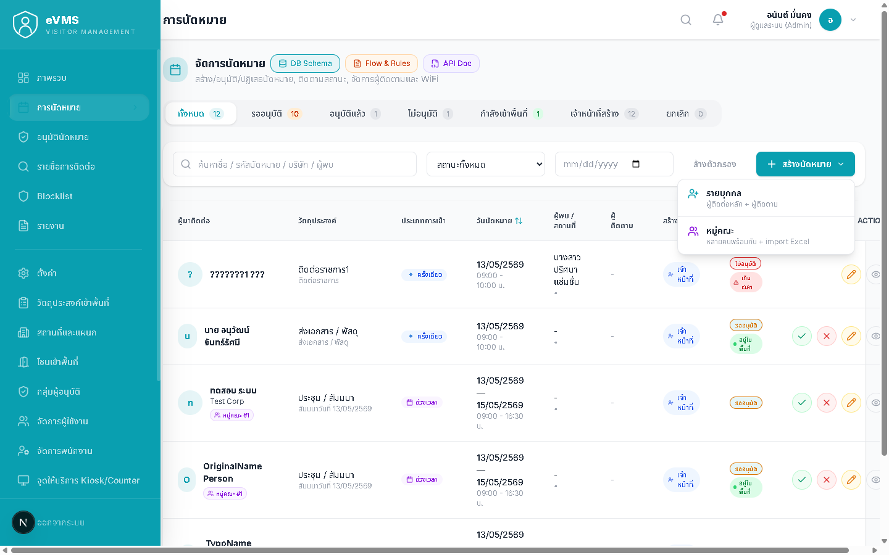
1 2 3 4 คลิกเพื่อขยายกด + สร้างนัดหมาย จะมีเมนูให้เลือกโหมด
สำหรับผู้ติดต่อหลัก 1 คน + ผู้ติดตาม — กรอกข้อมูล ผู้พบ วัตถุประสงค์ วัน-เวลา
สำหรับคณะดูงานหลายคน — กำหนดรอบเวลา และนำเข้ารายชื่อจาก Excel
กรองตามสถานะ แก้ไข/ยกเลิกนัด และพิมพ์หรือส่ง QR ให้ผู้มาเยือน
ติดตามคณะดูงานทั้งกลุ่มในหน้าเดียว หลังสร้างนัดแบบ Batch จากหน้านัดหมาย
เมนู: การนัดหมาย → กลุ่ม ·appointments/groups
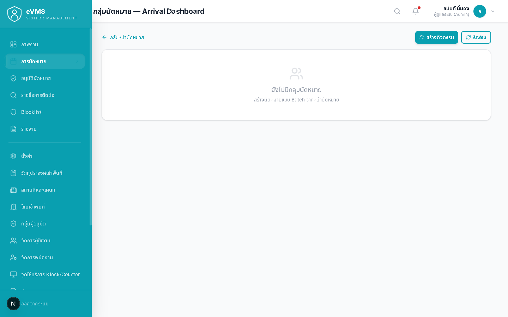
1 2 3 คลิกเพื่อขยายกด สร้างกิจกรรม เพื่อเริ่มกลุ่มนัดหมายใหม่สำหรับคณะดูงาน
กลุ่มที่สร้างแล้วจะแสดงที่นี่ พร้อมสถานะการมาถึงของสมาชิก
กด รีเฟรช เพื่ออัปเดตสถานะการเช็คอินของคณะแบบเรียลไทม์
สร้างกลุ่มได้จากหน้านัดหมาย → หมู่คณะ แล้วนำเข้ารายชื่อทั้งคณะจากไฟล์ Excel
ดูคิวรออนุมัติ กรองตามสถานะ และอนุมัติ/ปฏิเสธพร้อมเหตุผล — ระบบแจ้งผู้มาเยือนอัตโนมัติ
เมนู: อนุมัตินัดหมาย ·approvals
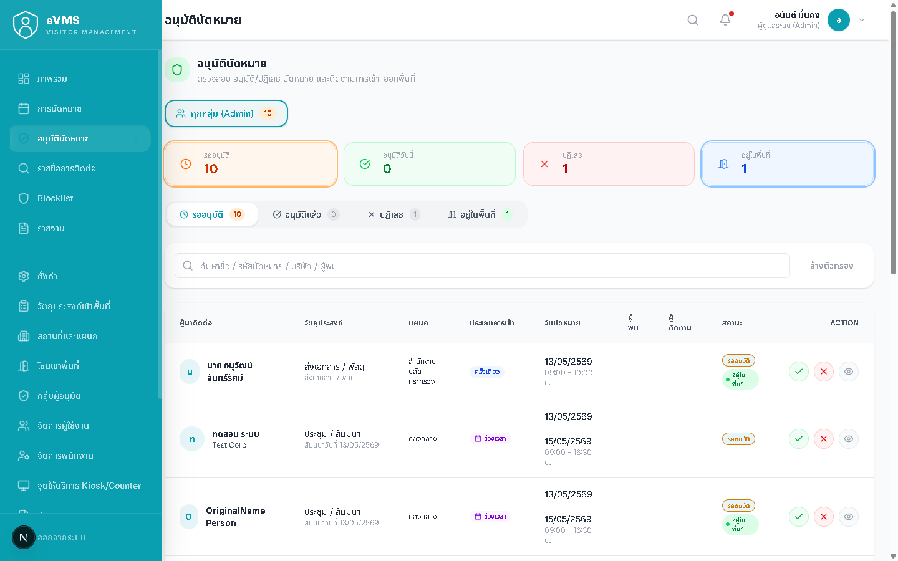
1 2 3 4 คลิกเพื่อขยายเลือกกลุ่มผู้อนุมัติที่รับผิดชอบ (admin เห็นทุกกลุ่ม)
รออนุมัติ · อนุมัติวันนี้ · ปฏิเสธ · อยู่ในพื้นที่
ใช้แท็บ รออนุมัติ / อนุมัติแล้ว / ปฏิเสธ / อยู่ในพื้นที่
กดเครื่องหมายถูก (อนุมัติ) หรือกากบาท (ปฏิเสธพร้อมเหตุผล)
อนุมัตินอกสถานที่ได้ทันทีจากแอป officer — เห็นรายการคำขอเข้าพบพร้อมสถานะ
แอปมือถือ (officer) ·mobile/officer/requests
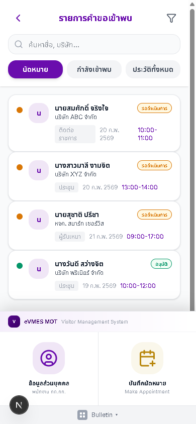
1 2 3 คลิกเพื่อขยายเลือก นัดหมาย / กำลังเข้าพบ / ประวัติทั้งหมด และค้นหาด้วยชื่อ/บริษัท
ป้ายสี เช่น "รอดำเนินการ" (ส้ม) และ "อนุมัติ" (เขียว) บอกสถานะแต่ละรายการ
แตะการ์ดเพื่อดูรายละเอียดและกดอนุมัติ/ปฏิเสธได้ทันทีจากมือถือ
ปุ่ม "ข้อมูลส่วนบุคคล" และ "บันทึกนัดหมาย" ช่วยทำงานได้เร็วขึ้น
ติดตามผู้ที่อยู่ในอาคาร จัดเตรียมการต้อนรับ (น้ำดื่ม/กาแฟ/ห้องประชุม) และจ่าย WiFi
แอปมือถือ (officer) ·mobile/officer/hospitality
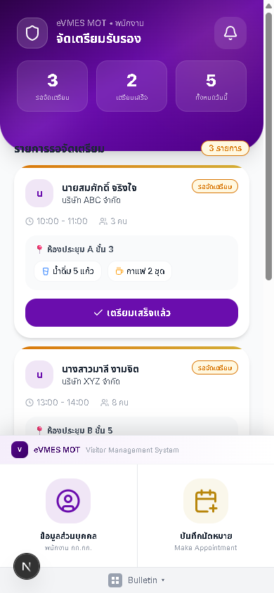
1 2 3 คลิกเพื่อขยายดูจำนวน รอจัดเตรียม / เตรียมเสร็จ / ทั้งหมดวันนี้ ที่แถบบน
เห็นห้องประชุม จำนวนคน และของต้อนรับ (น้ำดื่ม/กาแฟ) ที่ต้องเตรียม
กด เตรียมเสร็จแล้ว เมื่อจัดเตรียมครบ
จ่ายข้อมูล WiFi ให้ผู้มาเยือน และตรวจสอบเวลาเข้า-ออกได้จากที่นี่
ค้นด้วยชื่อ/เลขบัตร/บริษัท กรองตามประเภท/สถานะ/วัน และดูประวัติการเข้าออก
เมนู: รายชื่อการติดต่อ ·search
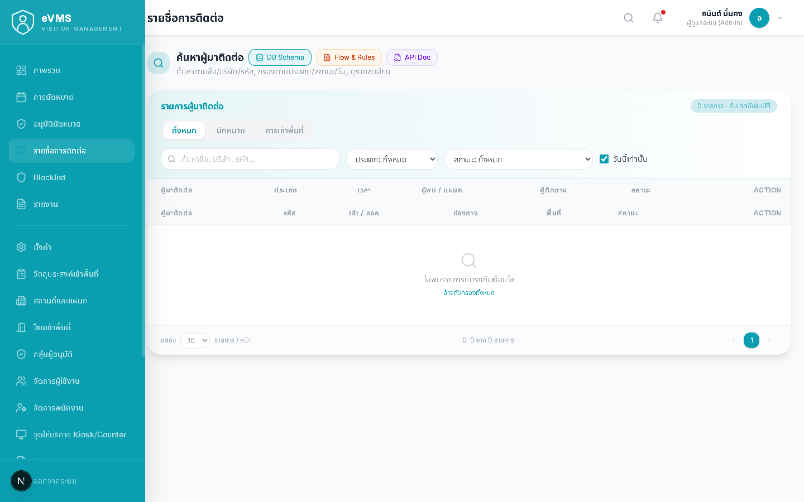
1 2 3 คลิกเพื่อขยายสลับ ทั้งหมด / นัดหมาย / การเข้าพื้นที่ ตามสิ่งที่ต้องการค้น
พิมพ์ชื่อ/บริษัท/รหัส และกรองตามประเภทและสถานะ
ติ๊ก "วันนี้เท่านั้น" ออก เพื่อค้นย้อนหลังและดูประวัติการเข้าออก
ดูสถิติรายวัน/สัปดาห์/เดือน แยกตามประเภท แผนก และช่องทาง พร้อมส่งออกไฟล์
เมนู: รายงาน ·reports
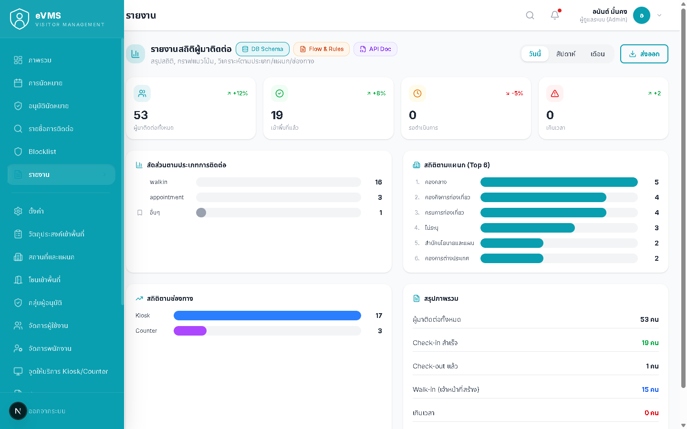
1 2 3 4 คลิกเพื่อขยายสลับ วันนี้ / สัปดาห์ / เดือน เพื่อดูสถิติในช่วงที่ต้องการ
ผู้มาติดต่อทั้งหมด · เข้าพื้นที่แล้ว · รอดำเนินการ · เกินเวลา พร้อมแนวโน้ม
ดูสัดส่วนตามประเภทการติดต่อ แผนก (Top 6) และช่องทาง
กด ส่งออก เพื่อบันทึกรายงานเป็นไฟล์ (Excel)
เพิ่ม/ถอนรายชื่อพร้อมเหตุผลและวันหมดอายุ — ระบบตรวจสอบอัตโนมัติก่อนอนุญาตเข้าพื้นที่
เมนู: Blocklist ·blocklist (เฉพาะ supervisor / admin)
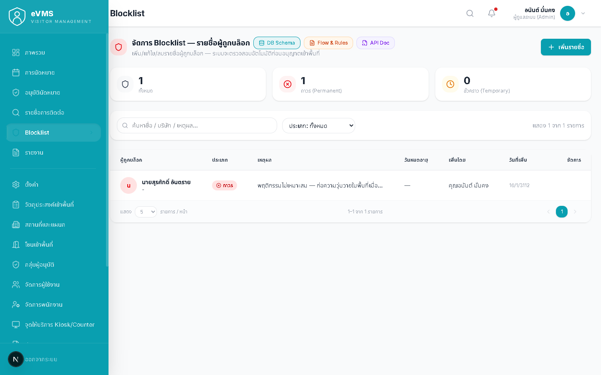
1 2 3 คลิกเพื่อขยายกด + เพิ่มรายชื่อ ระบุบุคคล เหตุผล และวันหมดอายุ (ถาวร/ชั่วคราว)
จำนวนทั้งหมด · แบบถาวร (Permanent) · แบบชั่วคราว (Temporary)
ดูเหตุผล ผู้เพิ่ม และวันที่ — ถอนรายชื่อเมื่อครบกำหนดหรือทบทวนแล้ว
รักษาความลับข้อมูลผู้มาเยือน และใช้ blocklist อย่างเป็นธรรมตามนโยบาย
ตั้งแต่เพิ่มเพื่อน LINE OA → ลงทะเบียนตามประเภท → เสร็จพร้อมใช้งาน (จองนัด / รับแจ้งเตือน)
ทุกเส้นทางเริ่มจาก "เพิ่มเพื่อน LINE OA" เหมือนกัน แล้วแยกตามประเภทผู้ใช้ — ข้อมูลที่กรอกต่างกัน
เพิ่มเพื่อน → เลือกประเภท → กรอกข้อมูล → ลงทะเบียนสำเร็จ (ทำครั้งเดียว)
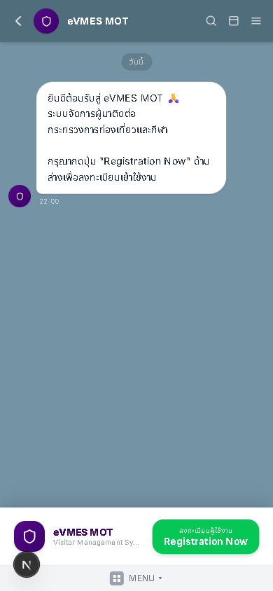
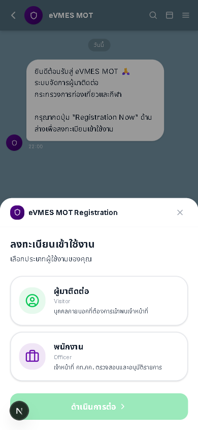
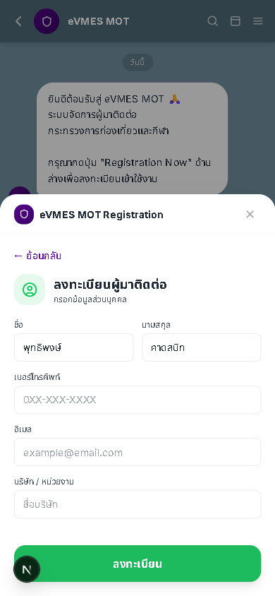
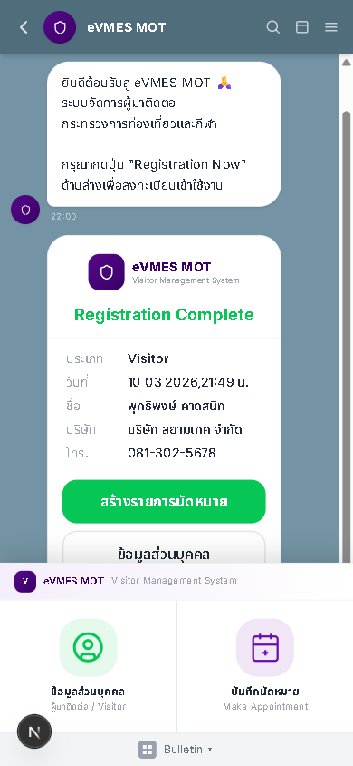
หลังลงทะเบียน ผู้มาติดต่อจองนัดเองผ่านเมนู LINE และรับ QR สำหรับ check-in ที่ Kiosk/Counter
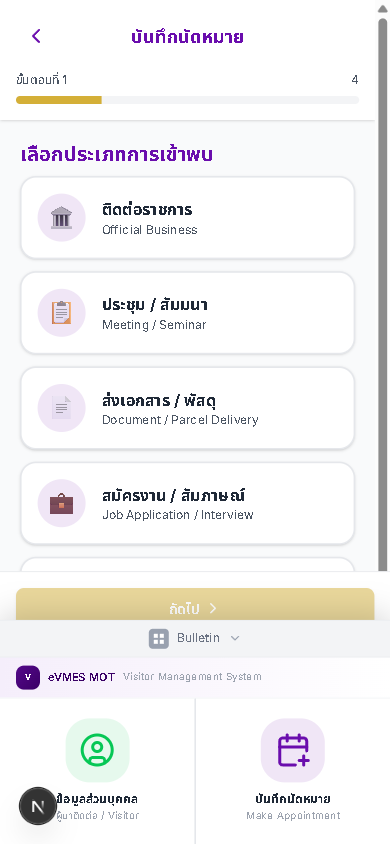
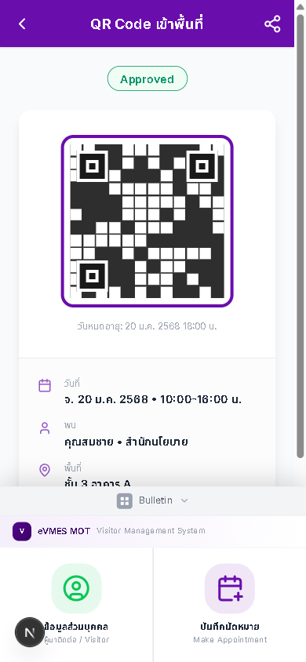
เจ้าหน้าที่ผูก LINE กับบัญชีพนักงาน เพื่อรับแจ้งเตือนและอนุมัติรายการผ่านมือถือ
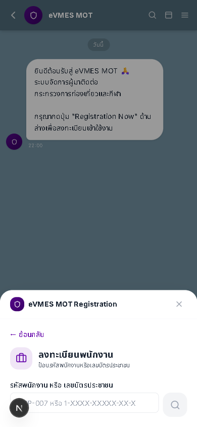
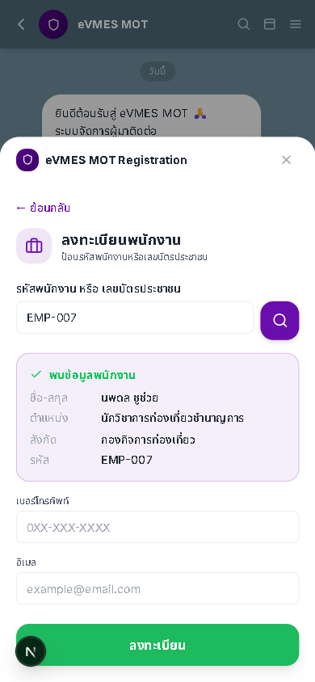
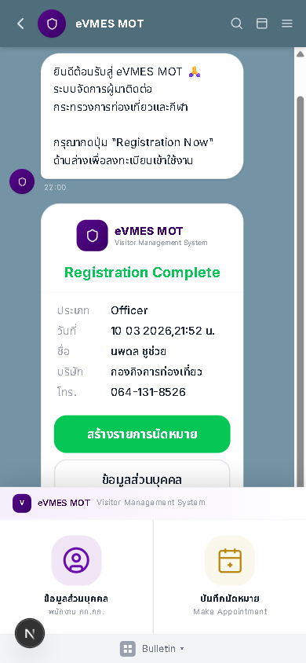
ผู้มาเยือน check-in เองที่เครื่อง Kiosk หรือให้เจ้าหน้าที่ รปภ. ช่วยที่ Counter — ตั้งแต่ยืนยันตัวตนจนรับบัตร
ทั้งสองเส้นทางเริ่มด้วยการยินยอม PDPA เหมือนกัน แล้วแยกตามว่ามีนัด (QR) หรือ Walk-in
แตะเริ่ม → ยินยอม PDPA → เลือกวัตถุประสงค์และผู้พบ → เลือกวิธียืนยันตัวตน
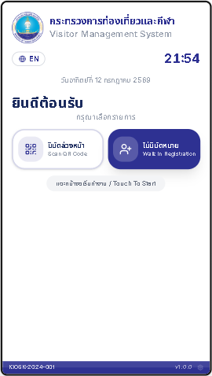
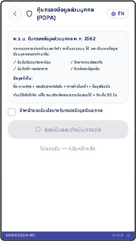
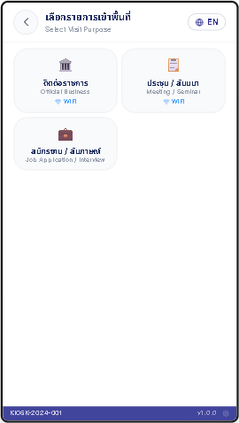
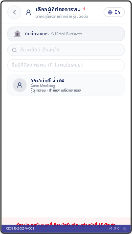
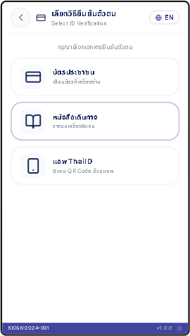
อ่านบัตร → ตรวจสอบข้อมูล (ตรวจ blocklist) → ถ่ายรูปใบหน้า + WiFi → พิมพ์บัตร/สลิป พร้อม QR
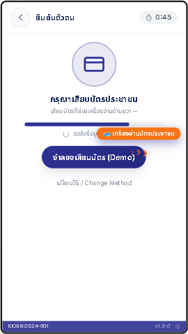
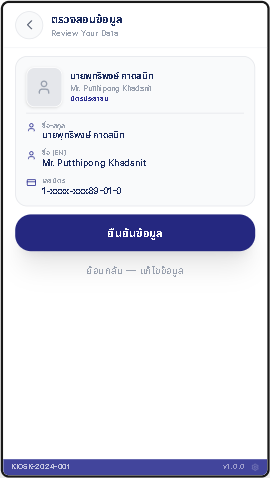
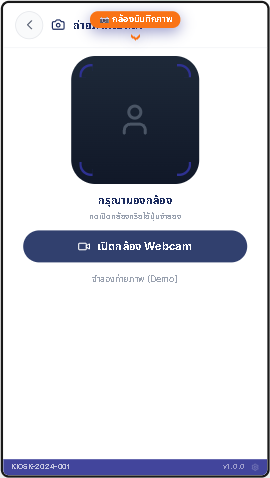
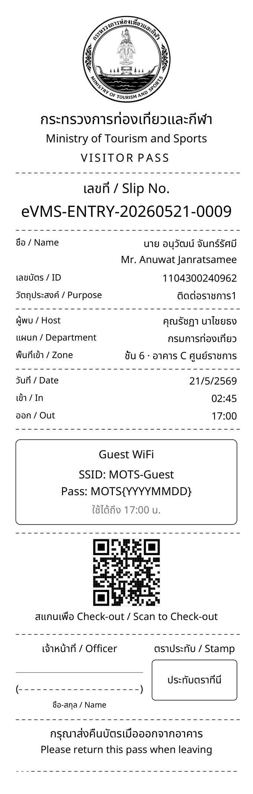
สำหรับผู้ที่จองผ่าน LINE/เว็บแล้ว — เร็วกว่าเพราะระบบมีข้อมูลนัดอยู่แล้ว
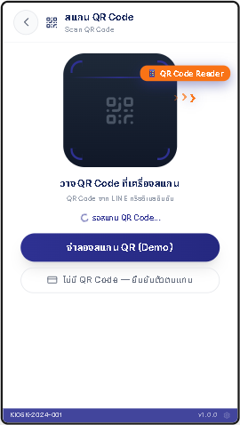
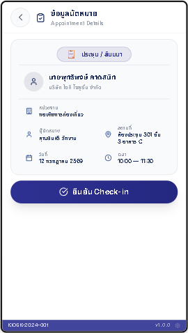
เวิร์กสเตชันหน้าเดียวที่เจ้าหน้าที่เป็นผู้ดำเนินการให้ — รับทั้ง Walk-in และผู้มีนัด พร้อม check-out
แอป Counter ·counter/dashboard
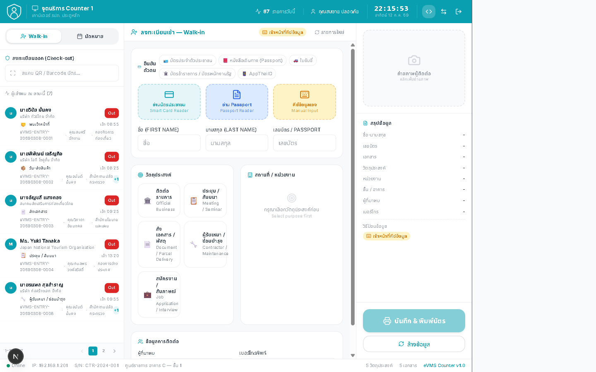
1 2 3 4 5 คลิกเพื่อขยายสลับแท็บ Walk-in / นัดหมาย ตามผู้มาติดต่อ
อ่านบัตรประชาชน / Passport หรือคีย์ข้อมูลเอง
ระบุวัตถุประสงค์ แผนก และผู้ที่มาพบ
สแกน QR บัตร หรือกด "Out" จากรายชื่อผู้อยู่ในอาคาร
ระบบเช็ค blocklist แล้วออกบัตร/สลิปให้
แตะไอคอนเฟืองที่แถบล่างของจอ แล้วใส่ PIN ผู้ดูแล เพื่อดูสถานะและข้อมูลเครื่อง
บนเครื่อง Kiosk → ไอคอนเฟือง · PIN ผู้ดูแล (ค่าเริ่มต้น10210)
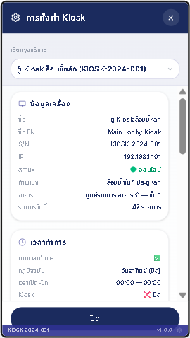
1 2 3 คลิกเพื่อขยายระบุว่าเครื่องนี้ผูกกับ service point ใด
ดู S/N, IP, สถานะออนไลน์, ตำแหน่ง และยอดใช้งานวันนี้
ดูเวลาเปิด-ปิด, เอกสารที่รับ, WiFi และการตั้งค่าสลิป (อ่านอย่างเดียว)
การตั้งค่าทั้งหมดจัดการที่ settings/service-points — บนเครื่องดูได้อย่างเดียว และมีช่องใส่ Device Token
ตั้งค่าตามลำดับ เพราะข้อมูลอ้างอิงต่อกัน — เริ่มจากสถานที่และพนักงานก่อนเสมอ
locationsstaffusersvisit-purposesdocument-typesapprover-groupsaccess-zonesbusiness-hoursservice-pointsemail-systemline-oa-confignotification-templatespdpa-consentvisit-slipsอยากทำอะไร ไปที่เมนูไหน — ตารางอ้างอิงเร็วสำหรับงานประจำวัน
| ต้องการทำ | ไปที่เมนู |
|---|---|
| ดูสรุปประจำวัน (ผู้มาเยือน · อยู่ในอาคาร · เกินเวลา) | ภาพรวม (Dashboard) |
| สร้างนัดให้ผู้มาติดต่อรายเดียว | การนัดหมาย → สร้างนัดหมาย → รายบุคคล |
| รับคณะดูงานหลายคน (นำเข้า Excel) | การนัดหมาย → สร้างนัดหมาย → หมู่คณะ |
| อนุมัติ / ปฏิเสธคำขอ | อนุมัตินัดหมาย (เว็บ) หรือแอป officer |
| ดูใครอยู่ในอาคาร / จ่าย WiFi | แอป officer → Hospitality |
| ค้นหาผู้มาเยือน / ดูประวัติเข้าออก | รายชื่อการติดต่อ (ค้นหา) |
| ดูรายงานสถิติ / ส่งออก | รายงาน |
| จัดการ blocklist (หัวหน้า) | Blocklist |
คู่มือเล่มนี้ครอบคลุมงานตั้งค่าของ IT และงานประจำวันของเจ้าหน้าที่ ตามหลักสูตรอบรม พร้อมภาพหน้าจอจริงทุกขั้นตอน
ระบบจะเปิดหน้าต่างพิมพ์ของเบราว์เซอร์ — เลือกปลายทางเป็น "บันทึกเป็น PDF (Save as PDF)" และตั้งค่ากระดาษเป็น แนวนอน (Landscape)